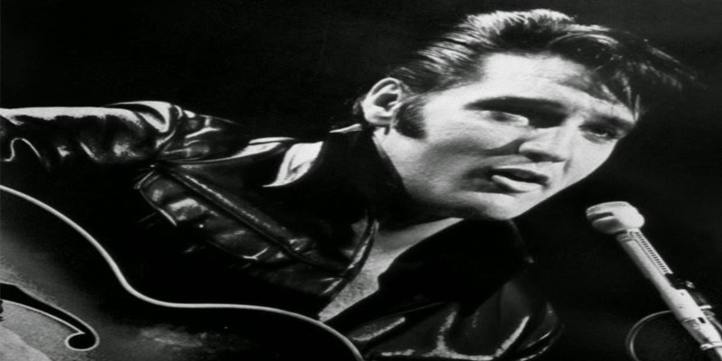

Curiosidades sobre o Rock Internacional
Quando surgiu o Rock? E em que estado surgiu o rock?
"O surgimento do rock aconteceu nos EUA como consequência da mistura de outros estilos musicais, com enfoque no jazz, folk, country e rhythm and blues. As primeiras experimentações ocorreram ainda na década de 40, sobretudo em seus últimos anos, mas foi nos anos 50 que a vertente ganhou contornos mais nítidos."
E quais as principais bandas de rock anos 50?
Segundo os fãs são elas:
- Elvis Presley
- Chuck Berry
- Jerry Lee Lewis
- Little Richard
- Buddy Holly
- Frank Sinatra
- E mais..
E quais as principais bandas de rock anos 60?
Segundo os fãs são elas:
- The Beatles
- Rolling Stones
- The Who
- Jimmi Hendrix
- Beach Boys
- The Stooges
- The Kinks
- E mais..
E quais as principais bandas de rock anos 70?
Segundo os fãs são elas:
- David Bowie
- The Clash
- Ramones
- Neil Young
- Led Zeppelin
- Black Sabbath
- Pink Floyd
- ACDC
E quais as principais bandas de rock anos 80?
Segundo os fãs são elas:
- Guns N' Roses
- Queen
- U2
- Bon Jovi
- Pixies
- Metallica
- Iron Maiden
Curiosidades Sobre o Rock Nacional
Quando surgiu o Rock no Brasil?
"O marco inicial do rock brasileiro é datado de 24 de outubro de 1955, quando foi lançada, na voz de Nora Ney, a música “Ronda das Horas”, uma versão de “Rock Around the Clock”, um dos primeiros sucessos do gênero, originalmente gravado por Bill Haley."